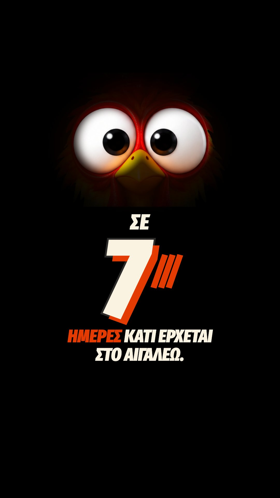
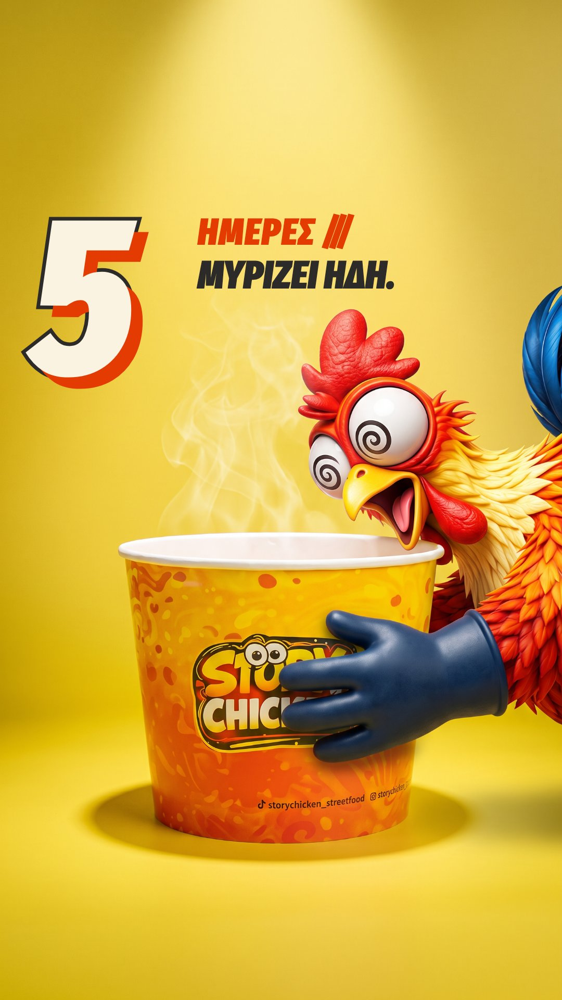
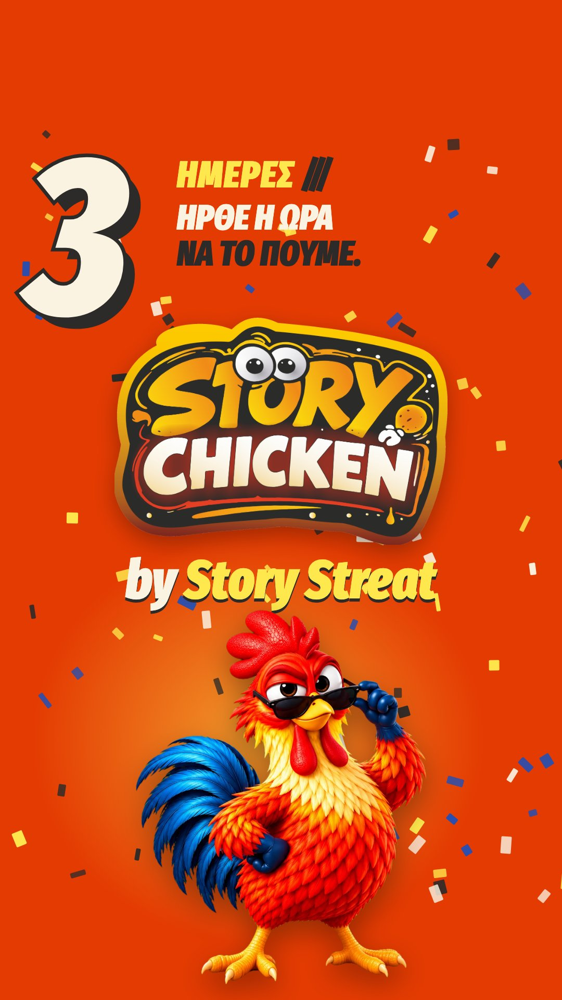
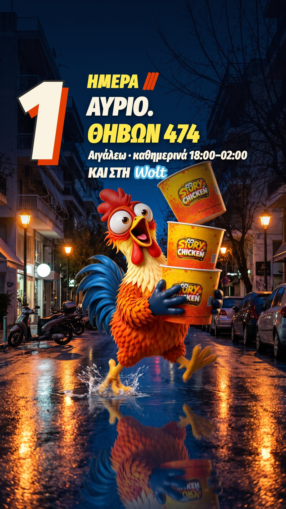
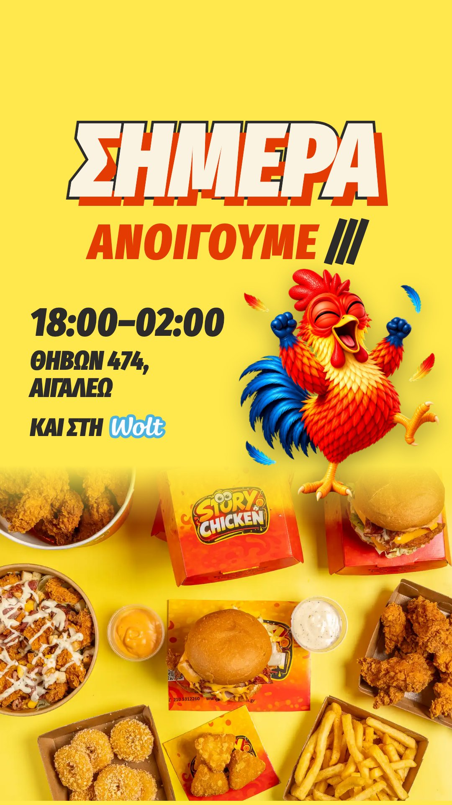

Τρίτη 3 Νοεμβρίου · 09:00

Χωρίς λεζάντα (story)
Προεπισκόπηση των posts πριν δημοσιευτούν. Αν θέλετε αλλαγή σε κάποιο post, πατήστε «Ζήτα αλλαγή» κάτω από αυτό και γράψτε τι θέλετε να αλλάξει.

Χωρίς λεζάντα (story)
Ακόμα περιμένουμε απάντηση. 🐓🔇 Ανοίγουμε την Τρίτη 10/11 στο Αιγάλεω. Μέχρι να συνέλθει ο κόκορας, έλα να το δοκιμάσεις εσύ: τραγανά φιλέτα, wings, burgers και buckets, καθημερινά 13:00–24:00. 📍 Θηβών 474, Αιγάλεω Tag αυτόν που θα έρθει μαζί σου την Τρίτη 👇 #storychicken #friedchicken #αιγαλεω #crispychicken #streetfood
1ο σχόλιο: Ο κόκορας είναι καλά. Απλώς ακόμα επεξεργάζεται.

Χωρίς λεζάντα (story)

Χωρίς λεζάντα (story)

Χωρίς λεζάντα (story)

Χωρίς λεζάντα (story)
Ο κόκορας ακόμα ψάχνει από πού έρχεται η μυρωδιά. 👀 Εσύ ξέρεις: από τη Θηβών 474. Ένα bucket με τραγανές φτερούγες για όλη την παρέα. Ή μόνο για σένα, αν δεν το πεις σε κανέναν. Fried chicken στο Αιγάλεω, όπως πρέπει. 📍 Θηβών 474, Αιγάλεω · καθημερινά 13:00–24:00 🛵 Wolt: link στο bio Tag αυτόν που θα το έτρωγε όλο μόνος του 👇 #storychicken #friedchicken #αιγαλεω #wings #friedchickenbucket
Σύρε δεξιά για να καταλάβεις αυτή τη φάτσα. ☀️ Crispy φιλέτο, λιωμένη cheddar, τραγανό bacon. Κρατιέται με τα δύο χέρια, αλλιώς δεν γίνεται. Το πιο σοβαρό μεσημεριανό της εβδομάδας, στο Αιγάλεω. 📍 Θηβών 474, Αιγάλεω · καθημερινά 13:00–24:00 🛵 Wolt: link στο bio Στείλ' το σε αυτόν που τρώτε μαζί μεσημέρι 👇 #storychicken #friedchicken #αιγαλεω #chickenburger #cheesebacon
Ο κόκορας ήπιε όλο το μπουκάλι νερό. Εσύ πόσο αντέχεις; 🌶️ Βουτάς τη φτερούγα στη Lava Hot, μετράς μέχρι το τρία και μετά καταλαβαίνεις τον κόκορα. Spicy wings στο Αιγάλεω, για όσους λένε «εμένα δεν με πιάνει τίποτα». 📍 Θηβών 474, Αιγάλεω · καθημερινά 13:00–24:00 🛵 Wolt: link στο bio Tag αυτόν που το λέει πάντα 👇 #storychicken #friedchicken #αιγαλεω #lavahot #spicy #wings
XXL Mix Bucket για το ματς: 17,90€. Αρκεί να μην το αφήσεις στον κόκορα. 🍗 Εκείνος το ξεκίνησε «για την παρέα» και στο γκολ κρατούσε ήδη το τελευταίο κοκαλάκι. Συμβουλή: το bucket μένει στη δική σου μεριά του καναπέ. Fried chicken για το βραδινό ματς, στο Αιγάλεω. 📍 Θηβών 474, Αιγάλεω · καθημερινά 13:00–24:00 🛵 Wolt: link στο bio Tag αυτόν που τελειώνει το bucket πριν το ημίχρονο 👇 #storychicken #friedchicken #αιγαλεω #bucket #friedchickenbucket
1ο σχόλιο: Ο κόκορας ζητάει συγγνώμη από την παρέα. Με το βλέμμα.
Η φάτσα όταν σου κλέβουν φτερούγα. 👀 Golden hour στην ταράτσα, ένα κουτί τραγανές φτερούγες και ένα χέρι που δεν ρώτησε. Το βλέμμα της λέει όλα όσα δεν είπε. Crispy wings στο Αιγάλεω. 📍 Θηβών 474, Αιγάλεω · καθημερινά 13:00–24:00 🛵 Wolt: link στο bio Tag αυτόν που σου κλέβει πάντα από το κουτί 👇 #storychicken #friedchicken #αιγαλεω #wings #crispychicken
Ο κόκορας κοιτάει το ένα, κοιτάει το άλλο. Από το μεσημέρι. 👀 Οι φτερούγες θέλουν χέρια και λίγο χάος. Τα φιλέτα είναι πιο καθαρή υπόθεση, τραγανά από άκρη σε άκρη. Λάθος απάντηση δεν υπάρχει. Υπάρχει μόνο η πιο έξυπνη: και τα δύο. Fried chicken στο Αιγάλεω. 📍 Θηβών 474, Αιγάλεω · καθημερινά 13:00–24:00 🛵 Wolt: link στο bio Ψήφισε στα σχόλια: 1 για φτερούγα, 2 για φιλέτο 👇 #storychicken #friedchicken #αιγαλεω #wings #crispychicken
Ένα bucket, πολλά χέρια, μηδέν ευγένειες. 🌙 Βράδυ στα σκαλιά της πολυκατοικίας. Φτερούγες και φιλέτα στη μέση, και κανείς δεν περιμένει τη σειρά του. Fried chicken για την παρέα, στο Αιγάλεω. 📍 Θηβών 474, Αιγάλεω · καθημερινά 13:00–24:00 🛵 Wolt: link στο bio Wings ή φιλέτα; Μία απάντηση 👇 #storychicken #friedchicken #αιγαλεω #bucket #friedchickenbucket